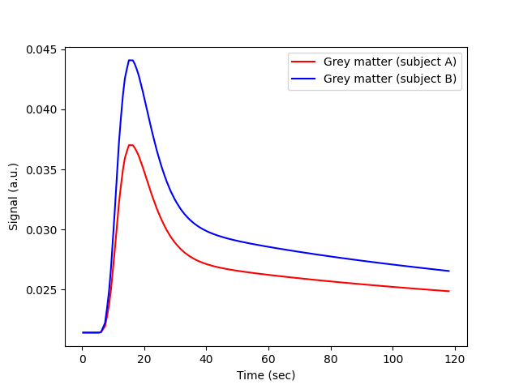
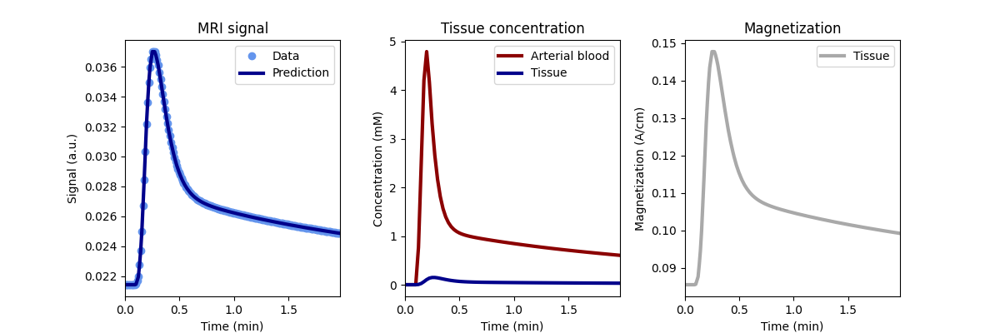
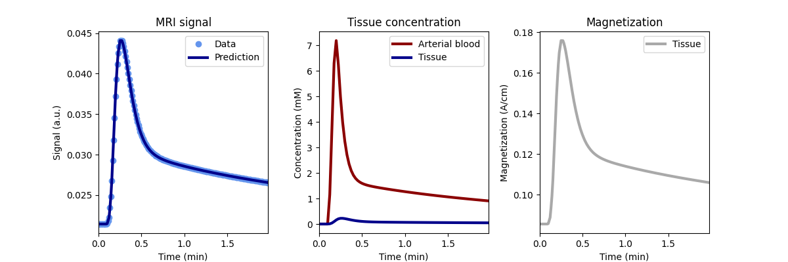
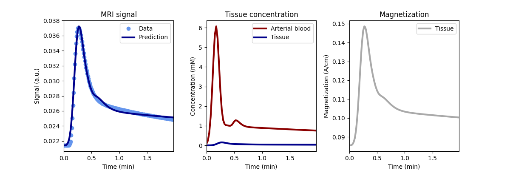
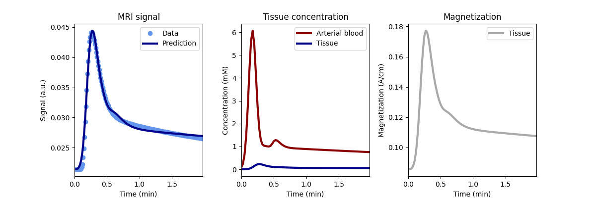

Note
Go to the end to download the full example code.
Arterial Input Functions#
This tutorial will explore the role of the arterial input function (AIF) in DC-MRI analysis, including the effect of using population-average AIFs versus subject-specific AIFs.
# Import necessary packages
import numpy as np
import matplotlib.pyplot as plt
import dcmri as dc
Why do we measure AIFs?#
We simulate a DCE-MRI experiment on the brain of two subjects (A and B) that are identical, except that A has a higher cardiac output (9 litres per minute or 150 mL/sec) than B (6 litres per minute or 100 mL/sec). Let’s simulate the signal-time curves that we would measure in grey matter.
We first generate the input functions for A and B:
# Define the experimental setup
tmax = 120 # Maximum acquisition time is 120 seconds (first-pass perfusion imaging)
dt = 1.5 # Temporal resolution is 1.5 seconds
# Simulate the concentrations at the arterial inlet to the tissue.
# We use `aif_tristan` here as this allows us to modify the cardiac output:
t = np.arange(0, tmax, dt)
ca_A = dc.aif_tristan(t, BAT=0, CO=150)
ca_B = dc.aif_tristan(t, BAT=0, CO=100)
Now we generate the signals and plot them:
aif_A = {'dt': dt, 'c_ar': ca_A}
aif_B = {'dt': dt, 'c_ar': ca_B}
# Define the tissue properties (grey matter)
grey_matter = {
'v_b': 0.05, # Blood volume fraction is 5 mL/100mL in grey matter,
# or 0.05 in standard units of mL/cm3.
'F_b': 0.01, # Blood flow is 60 mL/min/100mL in grey matter,
# or 0.01 in standard units of mL/sec/cm3.
'T_ar': 0,
}
config = {
'kinetics': 'NX',
'sequence': 'ZTE-3D-SPGR-SS',
't2s_relaxation': None,
}
# Generate tissue signals
# NX = No-Exchange of contrast agent is appropriate
# for brain tissue with intact blood-brain barrier.
signal = dc.TissueX(**config)
tissue = dc.InverseTissueX(**config)
# Generate the signal
sig_A = signal(grey_matter | aif_A)
sig_B = signal(grey_matter | aif_B)
# Compare the two signals:
plt.plot(sig_A['tS'], sig_A['S'][0,0,:], 'r-', label='Grey matter (subject A)')
plt.plot(sig_B['tS'], sig_B['S'][0,0,:], 'b-', label='Grey matter (subject B)')
plt.xlabel('Time (sec)')
plt.ylabel('Signal (a.u.)')
plt.legend()
plt.show()

The signals are very different, even though the grey matter of A and B is identical. The difference reflects the cardiac output, which is a confounder in an experiment that aims to characterise the brain tissue.
Any visual interpretation of the signal-time curves, or a descriptive analysis using parameters such as the area under the signal-enhancement curve, or maximum signal enhancement, would lead to the false conclusion that the grey matter of subject B is more perfused than that of subject A. The AIF avoids this pitfall, and ensures that any systemic differences between subjects are not misinterpreted as differences in tissue properties.
How is the AIF used?#
To illustrate how this works, let’s treat the signals generated above as measurements and use them to determine the unknown perfusion and vascularity of the grey matter of subjects A and B. We assume that the AIF is measured so the data consist of the signal and AIF:
Helper function
def print_params(title, truth, A, B):
rows = [
("Ground truth", truth['v_b'], truth['F_b']),
("Tissue params (A)", A['pars']['v_b'], A['pars']['F_b']),
("Tissue params (B)", B['pars']['v_b'], B['pars']['F_b']),
]
width = 40
if title:
print("=" * width)
print(f"{title:^{width}}")
print("=" * width)
print(f"{'':<20}{'v_b':>10}{'F_b':>10}")
print("-" * width)
for name, v_b, F_b in rows:
print(f"{name:<20}{v_b:>10.4g}{F_b:>10.4g}")
print_params('Accurate AIF', grey_matter, A, B)
========================================
Accurate AIF
========================================
v_b F_b
----------------------------------------
Ground truth 0.05 0.01
Tissue params (A) 0.05 0.01
Tissue params (B) 0.05 0.01
Thanks to the AIF, we correctly conclude from these data that the blood flow and the blood volume of the grey matter of A and B are the same, despite the very different appearance of the signals measured in the grey matter of both subjects.
Let’s check the fit to the data for completeness:


The case for population AIFs#
The difficulty with the approach outlined above is that this requires an (accurate) measurement of the arterial concentration or signal in individual subjects. This is not a trivial problem. Feeding arteries are small for instance, in which case a concentration in pure blood may not be accessible; or they are far from the tissue of interest, causing bolus dispersion errors or differences in signal properties that are difficult to correct for; or they are measured in rapidly flowing and pulsating blood where standard signal models may be inaccurate.
If the arterial input is inaccurately measured, then the input to the tissue is misinterpreted, and this will translate to an error in the measured parameters. To illustrate this, let’s assume there is a partial volume error in the AIF of patient A, causing its arterial blood concentration to be underestimated by a factor 2:
========================================
Inaccurate AIF
========================================
v_b F_b
----------------------------------------
Ground truth 0.05 0.01
Tissue params (A) 0.1 0.02
Tissue params (B) 0.1 0.02
The tissue perfusion is now overestimated with the same factor 2, which obviously could lead to entirely wrong conclusions as regards the grey matter health. An additional problem is that this type of error is difficult to control. If partial volume effects are present, they will cause different levels of overestimation in different measurements. So this not only causes a bias, but also a variability that will impact even on assessed changes over time in the same subject.
Addressing those issues by experimental design may be possible to some extent, but may also require changes that are incompatible with other constraints. For instance, partial volume errors can be reduced by increasing the image resolution, but this may lead to acquisition times that are too long for blood flow measurement.
An alternative approach that is sometimes proposed is to avoid the use of a
measured AIF alltogether, and instead use a standardized AIF measured once
using a similar experiment on a representative population.
A popular choice is the AIF derived by
Parker et al (2006),
which is implemented in dcmri as the function aif_parker.
Example using a population AIF#
To illustrate the implications of using a population-based AIF, lets analyse the data from our subjects A and B again, this time using a popular population-based AIF:
data_A['c_ar'] = dc.aif_parker(t, BAT=0)
data_B['c_ar'] = dc.aif_parker(t, BAT=0)
# Now fit
A = tissue(data_A)
B = tissue(data_B)
# Check the parameter values
print_params('Population AIF', grey_matter, A, B)
========================================
Population AIF
========================================
v_b F_b
----------------------------------------
Ground truth 0.05 0.01
Tissue params (A) 0.04334 0.005959
Tissue params (B) 0.065 0.008953
The parameter values are now inaccurate though the fits to the data are reasonable:


Hence, while a suitable chosen population AIF may produce values in the correct order of magnitude, it suffers from the same fundamental problem as descriptive analyses that between-subject differences in tissue curves are interpreted as reflecting tissue properties, even if in reality they are due to systemic differences (cardiac output in this example).
Total running time of the script: (0 minutes 0.899 seconds)